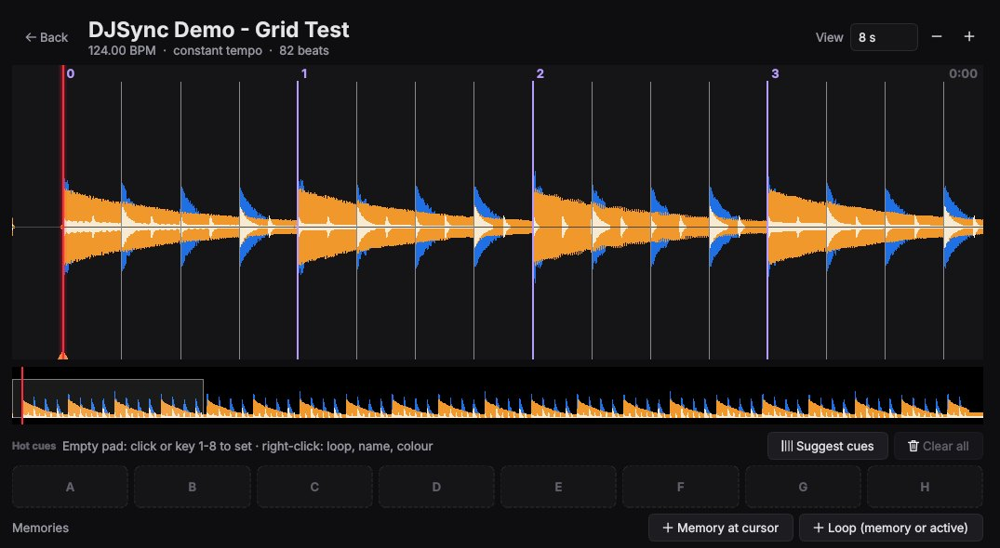
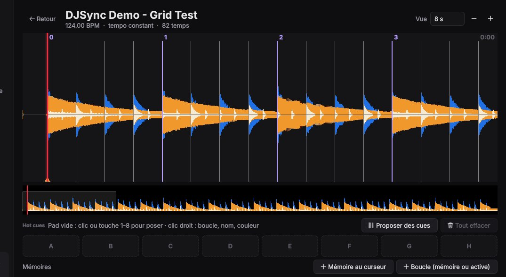

DJSync — free Rekordbox USB export for Pioneer CDJs, without Rekordbox
Download music, analyse BPM, key, beat grid and cues, and write a USB drive ready for Pioneer CDJ / XDJ — from a portable app that runs straight from the drive, on Windows, macOS or Linux. Free and open source, no account.

What DJSync does
Find and download
- YouTube Music search, results as you type, preview before downloading.
- Links from YouTube and SoundCloud (tracks or playlists), Spotify and Deezer playlists.
- Higher-quality sources when they exist (free downloads, lossless archives, Soulseek), with an estimate of the real quality of each file.
- Your own files: drag them in, or choose a watched folder where your purchases arrive.
Analyse without Rekordbox
- BPM, beat grid, key in Camelot notation, Pioneer waveforms.
- Beat grid editor: shift, set the first beat, BPM × 2, ÷ 2, × 3/2, × 2/3, magnet.
- Hot cues A–H in the Rekordbox colours, loops and memories, with a cue suggestion.
- Tracks already analysed by Rekordbox are kept as they are.
Write the USB drive
- The drive's Rekordbox library:
exportLibrary.db(OneLibrary, recent players) andexport.pdb(older players). - Waveforms, artwork, playlists and folders, date added.
- Backups before every change, restore in one click, safe eject.
Your computer's Rekordbox too
- Adds tracks to the collection of your computer (Rekordbox 6 / 7,
master.db) while Rekordbox is closed. - Copy playlists between the drive and the computer, with their analysis.
Keep the library clean
- Duplicates found by comparing the audio, cues carried over to the kept version.
- Track info (title, artists, album, year, genre, artwork) suggested and reviewed track by track.
- Diagnostic: missing files, low-quality files, space used.
Made to be carried
- One file on the drive, nothing to install; FFmpeg included.
- English and French interface, 20 colour themes, zoom from 80 to 200 %.
- Works offline for everything except search and downloads.

Install (1 minute)
Nothing to install on the computer: DJSync runs straight from the USB drive. You need a drive exported by Rekordbox once
(it contains PIONEER/rekordbox/exportLibrary.db), or Rekordbox installed on the computer.
Windows 10 / 11
- Download DJSync.exe (one file).
- Copy it to the root of your USB drive, then double-click it.
- “Windows protected your PC”: More info ▸ Run anyway (once per computer).
macOS 11+ (Apple silicon, beta)
- Download DJSync-macOS.dmg and open it.
- Drag DJSync onto your USB drive, then double-click it there.
- First time: System Settings ▸ Privacy & Security ▸ Open Anyway.
Linux x86-64 (beta)
- Download DJSync-Linux-x86_64.tar.gz.
- Extract the
DJSyncfolder to your USB drive and runDJSync/DJSync. - If Qt asks for
xcb: installlibxcb-cursor0.
Updates are installed from the app (Settings ▸ DJSync), your settings and libraries are kept. Full guide: INSTALL.md.
Questions
How do I export music to a USB drive without Rekordbox?
Open DJSync from the drive, add tracks (download, import a link or your own files): DJSync writes the drive's library itself, ready for the players.
Is DJSync a Rekordbox alternative for CDJ / XDJ?
For preparing USB drives, yes: playlists, analysis, cues and waveforms. It is compatible with Rekordbox drives; it is not made by Pioneer DJ / AlphaTheta.
Can I put YouTube or SoundCloud tracks into Rekordbox?
Yes: search or paste a link, DJSync downloads, tags, analyses and adds the tracks to the drive or to your computer's collection.
Will DJSync change what I prepared in Rekordbox?
No: tracks analysed by Rekordbox keep their beat grid and cues, and DJSync backs up the library before every change.
Does it work on older players (CDJ-2000, XDJ)?
DJSync also writes export.pdb, the format older players read. It has been checked on some players only: keep a copy of your drive.
Is it really free?
Yes. GPL-3.0 open source, no account, no subscription, no server, no tracking.
Known limits
- Reverse-engineered formats. The drive formats are not documented by Pioneer DJ: keep a copy of your drive, and close Rekordbox while DJSync writes.
- macOS and Linux are in beta. macOS: Apple silicon only.
- YouTube quality. A file from YouTube is never better than YouTube's stream, whatever its format; DJSync shows an estimate of the real quality.
- Analysis. BPM, grid and key are close to Rekordbox on most tracks; some tracks (half time, 3:2, intros without kick) need a manual fix in Grid & cues.
DJSync — clé USB Rekordbox pour platines Pioneer, sans Rekordbox, gratuitement
Téléchargez de la musique, analysez BPM, tonalité, grille et cues, et préparez une clé USB prête pour les platines Pioneer CDJ / XDJ — depuis une application portable lancée directement depuis la clé, sous Windows, macOS ou Linux. Libre et gratuite, sans compte.
Ce que fait DJSync
Trouver et télécharger
- Recherche YouTube Music, résultats pendant la frappe, écoute avant de télécharger.
- Liens YouTube et SoundCloud (sons ou playlists), playlists Spotify et Deezer.
- Sources de meilleure qualité quand elles existent (téléchargements gratuits, archives sans perte, Soulseek), avec une estimation de la vraie qualité de chaque fichier.
- Vos propres fichiers : par glisser-déposer, ou un dossier surveillé où arrivent vos achats.
Analyser sans Rekordbox
- BPM, grille, tonalité en notation Camelot, formes d'onde Pioneer.
- Éditeur de grille : décaler, poser le premier temps, BPM × 2, ÷ 2, × 3/2, × 2/3, aimant.
- Hot cues A à H aux couleurs de Rekordbox, boucles et mémoires, avec une proposition de cues.
- Les sons déjà analysés par Rekordbox sont gardés tels quels.
Écrire la clé USB
- La bibliothèque Rekordbox de la clé :
exportLibrary.db(OneLibrary, platines récentes) etexport.pdb(platines plus anciennes). - Formes d'onde, pochettes, playlists et dossiers, date d'ajout.
- Sauvegarde avant chaque changement, restauration en un clic, éjection sûre.
Le Rekordbox de l'ordinateur aussi
- Ajoute des sons à la collection de l'ordinateur (Rekordbox 6 / 7,
master.db), Rekordbox fermé. - Copie de playlists entre la clé et l'ordinateur, avec leur analyse.
Une bibliothèque propre
- Doublons trouvés en comparant l'audio, cues reportés sur la version gardée.
- Infos des sons (titre, artistes, album, année, genre, pochette) proposées et vérifiées son par son.
- Diagnostic : fichiers manquants, fichiers de mauvaise qualité, espace occupé.
Faite pour voyager
- Un seul fichier sur la clé, rien à installer ; FFmpeg inclus.
- Interface en français et en anglais, 20 couleurs, zoom de 80 à 200 %.
- Fonctionne sans internet, sauf pour la recherche et les téléchargements.

Installation (1 minute)
Rien à installer sur l'ordinateur : DJSync se lance depuis la clé USB. Il faut une clé exportée une fois par Rekordbox
(elle contient PIONEER/rekordbox/exportLibrary.db), ou Rekordbox installé sur l'ordinateur.
Windows 10 / 11
- Téléchargez DJSync.exe (un seul fichier).
- Copiez-le à la racine de la clé, puis double-cliquez dessus.
- « Windows a protégé votre ordinateur » : Informations complémentaires ▸ Exécuter quand même (une fois par ordinateur).
macOS 11+ (Apple silicon, bêta)
- Téléchargez DJSync-macOS.dmg et ouvrez-le.
- Glissez DJSync sur la clé, puis double-cliquez dessus depuis la clé.
- La première fois : Réglages Système ▸ Confidentialité et sécurité ▸ Ouvrir quand même.
Linux x86-64 (bêta)
- Téléchargez DJSync-Linux-x86_64.tar.gz.
- Extrayez le dossier
DJSyncsur la clé et lancezDJSync/DJSync. - Si Qt réclame
xcb: installezlibxcb-cursor0.
Les mises à jour s'installent depuis l'application (Paramètres ▸ DJSync), réglages et bibliothèques gardés. Guide complet : INSTALL.fr.md.
Questions
Comment mettre de la musique sur une clé USB sans Rekordbox ?
Ouvrez DJSync depuis la clé et ajoutez des sons (téléchargement, lien, ou vos fichiers) : DJSync écrit lui-même la bibliothèque de la clé, prête pour les platines.
DJSync remplace-t-il Rekordbox pour les CDJ / XDJ ?
Pour préparer des clés, oui : playlists, analyse, cues et formes d'onde. Il est compatible avec les clés Rekordbox ; il n'est pas fait par Pioneer DJ / AlphaTheta.
Peut-on mettre des sons YouTube ou SoundCloud dans Rekordbox ?
Oui : cherchez ou collez un lien, DJSync télécharge, renseigne, analyse et ajoute les sons à la clé ou à la collection de l'ordinateur.
DJSync modifie-t-il ce que j'ai préparé dans Rekordbox ?
Non : les sons analysés par Rekordbox gardent leur grille et leurs cues, et DJSync sauvegarde la bibliothèque avant chaque changement.
Ça marche sur les anciennes platines (CDJ-2000, XDJ) ?
DJSync écrit aussi export.pdb, le format que lisent les anciennes platines. Il n'a été vérifié que sur certaines platines : gardez une copie de votre clé.
C'est vraiment gratuit ?
Oui. Logiciel libre GPL-3.0, sans compte, sans abonnement, sans serveur, sans pistage.
Limites connues
- Formats déduits. Les formats de la clé ne sont pas documentés par Pioneer DJ : gardez une copie de votre clé et fermez Rekordbox pendant que DJSync écrit.
- macOS et Linux en bêta. macOS : Apple silicon seulement.
- Qualité YouTube. Un fichier venu de YouTube n'est jamais meilleur que le flux de YouTube, quel que soit son format ; DJSync affiche une estimation de la vraie qualité.
- Analyse. BPM, grille et tonalité sont proches de Rekordbox sur la plupart des sons ; certains (demi-tempo, rapport 3:2, intros sans kick) demandent une correction dans Grille et cues.